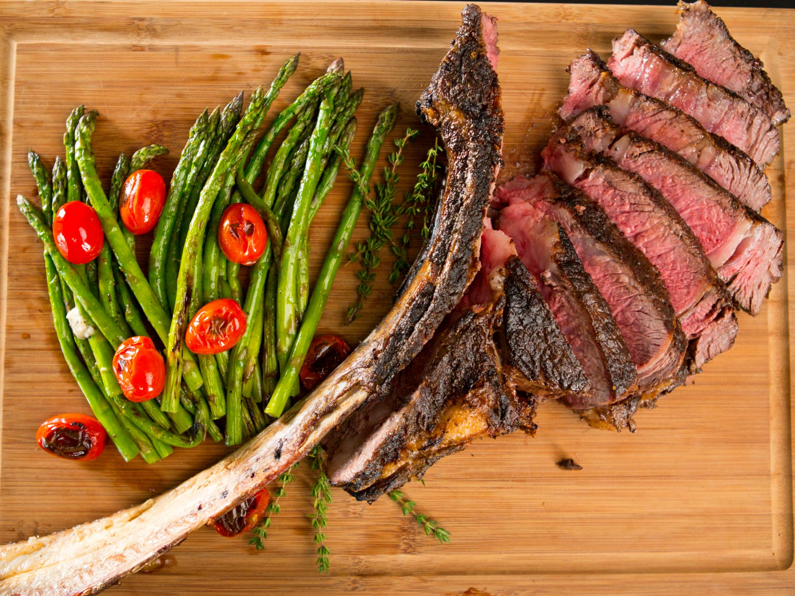

The Best Steak Ever

What makes this Steak different from others?
What makes a delicious steak? Is it the tenderness of the meat? Is it the cut of the steak? Maybe its the bold seasoning used? We'll go over the perfect blend of fire, salt, and fat needed to make the perfect steak!
Ingredients Needed
- 1 (3 1/2-lb.) tomahawk rib-eye steak
- 1 ½ tablespoons kosher salt
- 2 ½ teaspoons black pepper
Directions
- Let steak stand at room temperature 30 minutes to an hour before cooking. Preheat grill to medium-high (400°F to 450°F). Sprinkle steak evenly on both sides with salt and pepper. Lightly coat grill grates with oil or grilling spray.
- Place steak on hot grates, and grill, undisturbed, until it releases easily from the grates, about 4 minutes. Flip, and repeat on the other side. Continue grilling, turning occasionally, until a thermometer inserted into thickest portion of steak registers 125°F, 30 to 40 minutes. Transfer to a cutting board; let rest 15 minutes. Run a knife along the inside edge of the bone to remove the steak from bone in 1 piece; slice against the grain.
- Enjoy!